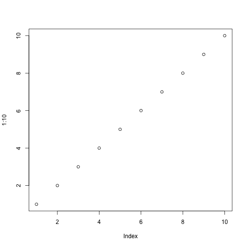

| markdown_pass1 {roxygen2} | R Documentation |
Expand the embedded inline code
markdown_pass1(text)
text |
Input text. |
For example this becomes two: 2.
Variables can be set and then reused, within the same
tag:
The value of x is 100.
We have access to the internal functions of the package, e.g.
since this is roxygen2, we can refer to the internal markdown
function, and this is TRUE: TRUE.
To insert the name of the current package: roxygen2.
The iris data set has 5 columns:
Sepal.Length, Sepal.Width, Petal.Length, Petal.Width, Species.
# Code block demo x + 1
## [1] 101
Chunk options:
names(mtcars) nrow(mtcars)
## [1] "mpg" "cyl" "disp" "hp" "drat" "wt" "qsec" "vs" "am" "gear" ## [11] "carb" ## [1] 32
Plots:
plot(1:10)

Text with the inline code expanded. A character vector of the
same length as the input text.